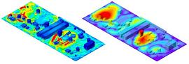
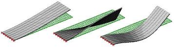
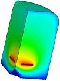

Finite Element
Analysis (FEA)
Finite Element Analysis (FEA)
is a computer-based numerical technique for obtaining near-accurate
solutions to a wide variety of complex engineering problems where the
variables are related by sets of algebraic, differential, and integral
equations.
Its applications include estimation or prediction of
structural strength and behavior, modeling, simulation, and design optimization in
engineering branches such as solid mechanics, fluid mechanics,
thermodynamics, electromagnetics, acoustics, and the like.
State-of-the-art FEA can now be applied to highly non-linear problems
involving convoluted geometries, inelastic material dynamics, and
fluctuating process conditions.
Finite Element Analysis operates on the principle that the analysis of a
large and complex structure can be simplified by breaking down the
complex structure into its parts, or "elements". Each of these
elements are then described by a set of relatively simpler equations.
These element-specific sets of equations are then joined together to
come up with an extremely large set of inter-related equations that
describe the behavior of the entire structure.
A computer is then used to perform the number crunching needed to find
solutions to these equations, producing plots to graphically show how
the structure behaves against the various excitation or stress
conditions of interest.
|
 |
|
Figure 1.
Examples of FEA plots generated from board stress analyses conducted by
Everett Charles Technologies; source: www.ectinfo.com |
It is
said that the use of finite elements to analyze more complex things
started as early as over 2,000 years ago, when geometers interested in
determining the circumference and area of a circle split the circle into
small rectangles that approximately described the area of the circle.
Eventually this allowed the determination of the value of pi.
FEA now makes possible the
prediction of how a certain design will measure up against
specifications even before a prototype is built, allowing quick
improvements to the design if necessary. FEA also prevents the
high costs of over-designing a structure, since it provides solutions
that are accurate enough to forego of whatever design guardbands were
being put in place just a few decades ago.
Finite
Element Analysis capability is
not cheap.
It needs powerful hardware and software for its effective execution. Commercial FEA software used in the semiconductor industry can
cost tens of thousands of dollars. Furthermore, engineers who are tasked to
perform FEA must have a strong foundation in engineering mechanics and
should have a basic understanding of finite element
methods. ANSYS and ALGOR are examples of companies that sell FEA
software.
Still,
companies who can afford to set up FEA capability should do so, because
the system cost will be negligible compared to failures that may arise
from inadequate design or modeling capability. Prevention of
costly over-designs will also help pay for the FEA system.

Figure 2.
3-D FEA plots showing how a beam of a micromachined
electromechanical system (MEMS) would behave under different excitation
frequency
levels; source: www.algor.com
FEA
is used extensively in the
semiconductor industry. 'Real-life' examples
of FEA applications in the industry include but are not limited to the
following:
- continuous
improvement of IC package designs and material sets;
- stress analysis of
adhesive bonding and design of bonded joints;
- fracture mechanics and
fatigue analysis of adhesive bonds;
- thermal
stress and
deformation analysis of solder joints;
- fracture mechanics of
solder joints for solder joint reliability studies;
-
thermo-mechanical stress analysis of interfaces within a package;
- comparative
analyses between flip-chip and wirebonded package configurations;
- thermal,
mechanical, and electrical modeling for various leadframe designs and
materials;
- simulations
of wirebond and die attach fatigue failures;
- selection
of the correct wire diameter, arrangement and profile given the current
loads;
- reduction of wafer
backside waviness through soft pad wafer backgrinding;
- modeling of the vibration
responses of beams in micro-machined silicon accelrometers; etc.
|
 |
|
Figure 3.
An FEA contour plot of the electric field surrounding a TIP field emitter; source:
www.ansys.com
|
See Also:
IC Packaging
HOME
Copyright
© 2004
www.EESemi.com.
All Rights Reserved.